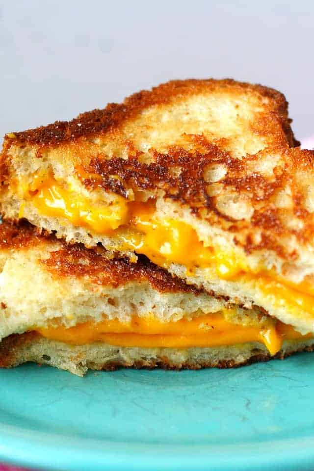

lasagna

Description
This is vegan grilled cheese, not only is it tasty, but meatless.
This grilled cheese will take about 30 minutes to make, below will be the ingredients.
ingredients
- Vegan Cheese slices(Daiya is a highly popular brand)
- Hawaian bread slices
- Butter
- Pan
- Honey
- Grilled Cheese maker
Steps
- Heat the olive oil in a medium skillet over medium heat.Add the butter and let it spread out in the pot
- Get two slices of your Hawaian bread
- Two slices of cheese
- Put a table spoon of honey/syrup in the pan and spin it around
- Put the two cheese slices on top of the bread and put the other slice of bread on top to make a sandwich
- Put it in the Grill cheese machine
<1i>Wait for it to finish it should take about 5 or less minutes
- Than simmmer each side of bread in pan sauce for a about 1 minutes and your done>